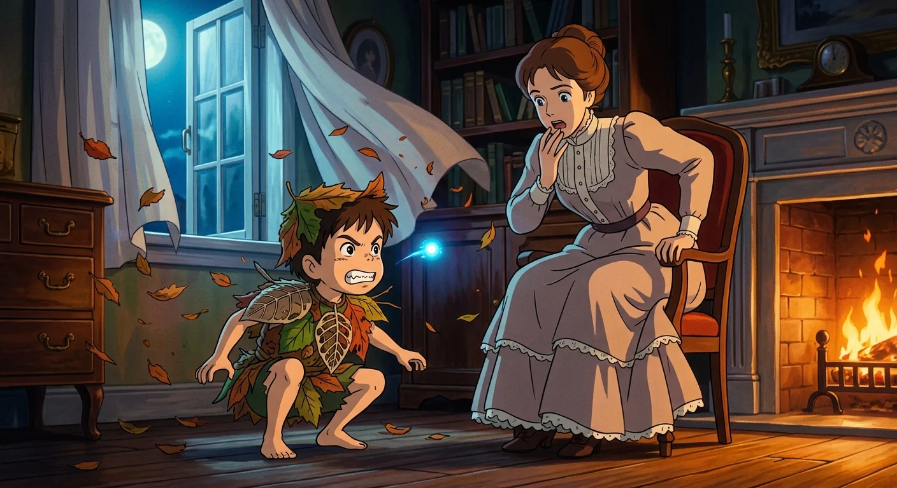
The Darlings Before the Adventure
Little Wendy Darling lived in a cozy house with her mother, her father, and her two younger brothers, John and Michael. Their father worked very hard and loved his children so much. Their mother had the sweetest smile with a hidden kiss in the corner that no one could quite catch. The family did not have a lot of money, but they were happy together.
The most wonderful thing about their house was their nurse. She was a big, fluffy dog named Nana! Nana took care of the children at bath time and bedtime. She was gentle and kind and very good at her job.
One day, their mother heard the children talking about someone named Peter Pan. Wendy said he was a magical boy who lived with fairies and never grew up. Their mother wondered if he was real. Then one night, while everyone was sleeping, the nursery window blew open. A boy flew in with a tiny, glowing light beside him. He was Peter Pan, and something amazing was about to happen.
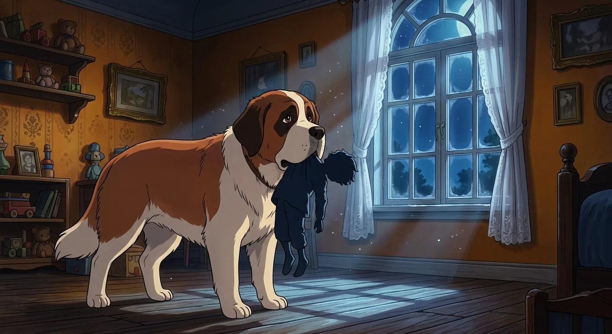
A Shadow Caught, a Family Undone
Mary Darling saw a strange boy in the nursery one night. He flew out the window before she could catch him! She worried he might fall, but when she looked outside, he was gone. All she saw was something like a shooting star in the sky.
Nana the dog had caught something special in her mouth. It was the boy's shadow! The window had closed so fast that his shadow got left behind. Mary rolled it up carefully and put it in a drawer to keep it safe.
A week later, something important happened. The family was getting ready to go out for dinner. Father got upset when dog hair got on his nice pants. He decided Nana should stay outside in the yard. Mother felt worried about this, but Father wanted things his way. The children went to bed, and Mother kissed them goodnight. Michael said something very sweet to her. Then the parents walked out into the starry night, not knowing that an adventure was about to begin.
The rest is waiting.
58 illustrated classics. Cinematic, anime, and kids editions. $4.99 a month — about the price of a coffee.
Start reading — $4.99/mo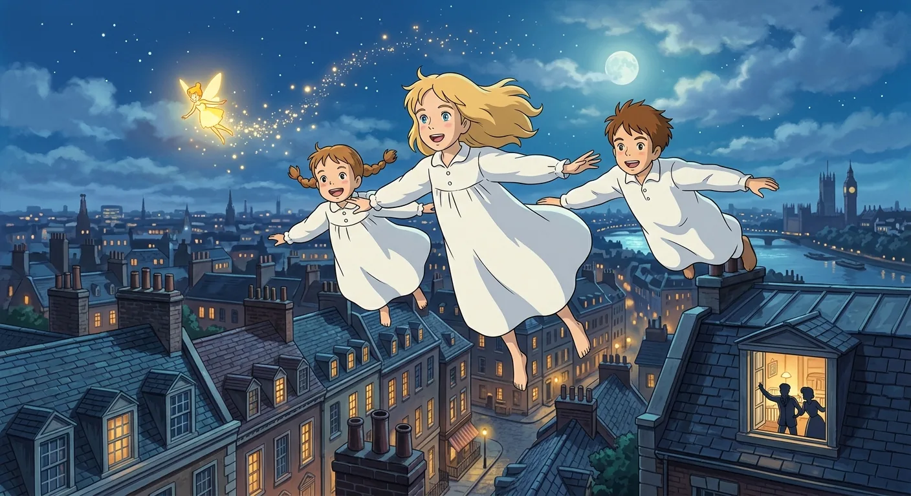
The Night Peter Found His Shadow
The little night-lights by the children's beds went out one by one. Then the nursery grew very dark and still. But soon a tiny, bright light zipped through the room! It was a fairy named Tinker Bell, no bigger than your hand. Right behind her came Peter Pan, floating in through the window with fairy dust still sparkling on his hands.
Peter had come back to find his shadow. Wendy's mother had rolled it up and put it in a drawer. Peter found it, but he could not make it stick back on. He even tried soap! Nothing worked, and Peter felt so sad that he sat down and cried. Wendy woke up and saw him there. She was not scared at all. She thought he was wonderful! Kind Wendy got her sewing things and stitched the shadow right onto Peter's foot. Peter was so happy that he jumped up and crowed like a rooster.
Peter told Wendy about a magical place called Neverland, full of mermaids and adventures. He said he could teach her to fly! Tinker Bell sprinkled fairy dust on Wendy, John, and Michael. They floated up, up, up to the ceiling! Then, with Peter leading the way, all four children flew out the window into the starry night sky.
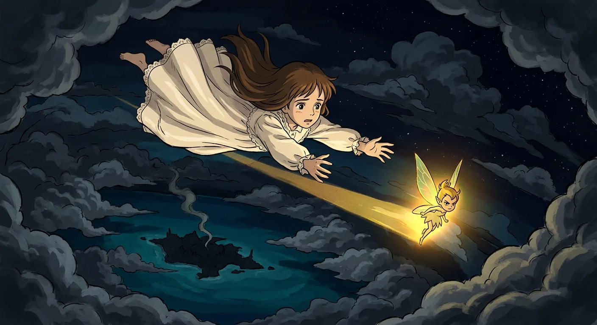
Journeying Through Skies and Uncertainty
They flew through the sky toward the Neverland, following Peter's directions. Peter made up the way as he went along, but the children trusted him because flying felt so wonderful. They swooped around tall towers just for fun. John and Michael raced while Wendy watched them all.
The journey took many days and nights. Peter found food for them in silly ways, chasing birds across the sky. Sleeping was hard because they would start to fall when they got drowsy. Peter always caught them just in time. Sometimes Peter flew off by himself and forgot about the children for a while. Wendy had to call out her name to remind him who they were.
Finally, the Neverland appeared below them, sparkling and magical. The children saw lagoons and flamingos and caves, just like in their dreams. Then darkness came, and a loud booming sound scattered them apart. Peter was blown one way, John and Michael another, and Wendy found herself alone with only tiny Tinker Bell nearby. The little fairy's light glowed ahead, and Wendy followed it down through the dark sky.
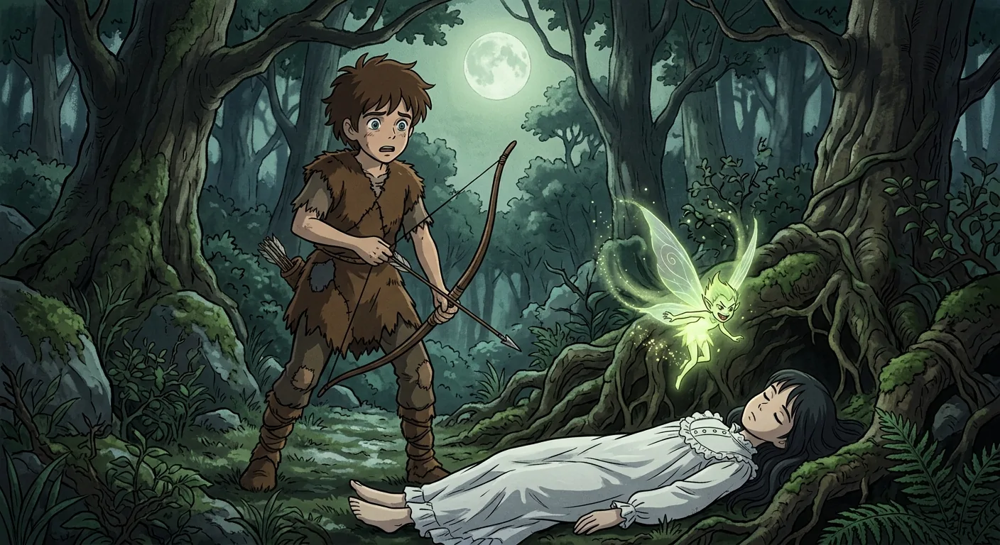
Neverland Awakens to the Hunt
When Peter started coming home, the whole island of Neverland woke up. While he was gone, everything had been sleepy and slow. The fairies stayed in bed late. The animals were calm and quiet. But now everyone felt busy and excited again.
That evening, something funny was happening in the forest. The lost boys were looking for Peter. The pirates were following the lost boys. And some animals were following everyone else. Round and round they all went through the trees, like a big circle game where nobody could catch anyone.
The lost boys wore cozy bear costumes and hid in the bushes. There was sweet Tootles, cheerful Nibs, proud Slightly, honest Curly, and the twins. When they heard pirates coming, they quickly slipped down into their secret home under some big hollow trees. Then something amazing appeared in the sky. It was a tired white bird floating down toward them. But it was not really a bird at all. It was Wendy, and she needed help.
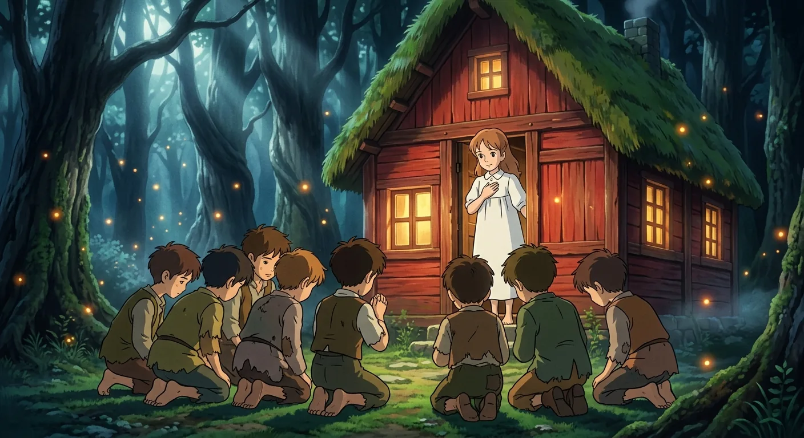
A Mother's Arrival and Narrow Escape
Tootles thought he had shot a big bird, but when the boys gathered around, they saw it was Wendy. Everyone felt very sad and worried. Tootles felt terrible about what he had done. Then Peter came back, so happy and proud. But when he saw Wendy lying still, his heart sank.
Then something wonderful happened! Wendy's arm moved, and she whispered softly. She was alive! The arrow had hit a special button Peter gave her. That little gift had kept her safe. Peter was so relieved. The boys wanted to help Wendy feel better, so they built a cozy little house right around her while she rested. They used soft things and made it snug and warm. When Wendy woke up, she loved her tiny home. The boys asked her to be their mother, and even though she was just a girl, she said she would try her best. That night, she tucked them all into bed, and everyone felt safe and happy together.
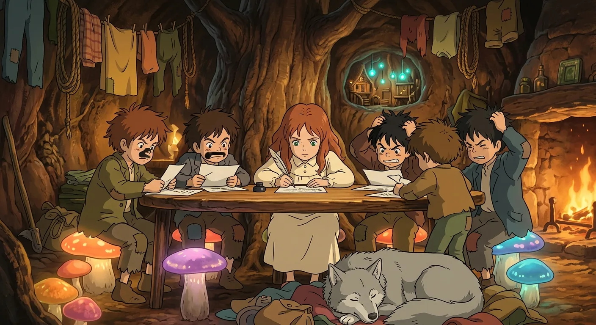
Wendy's Enchanted Domestic Underground
When Peter brought Wendy, John, and Michael to Neverland, he helped them find their very own hollow trees. These special trees were like secret slides that led down to a cozy home underground! Each child needed a tree that fit just right, and soon they could zoom up and down as easily as birds.
The home below was wonderful and surprising. It had one big room with a floor you could dig in and cute mushrooms to sit on. A little tree grew right in the middle and became their table every day. The bed folded up against the wall and came down at bedtime, when all the boys squeezed in together like cozy puppies. Baby Michael slept in a swinging basket above them. Tiny Tinker Bell had her own fancy room in the wall, no bigger than a birdcage but very pretty inside.
Wendy loved taking care of everyone. She cooked and sewed and played house, and a friendly pet wolf followed her everywhere. But sometimes she worried that her brothers were starting to forget their real parents back home. So Wendy asked them questions about Mother and Father to help them remember. Every day brought new adventures, and soon something exciting would happen at a magical place called the Mermaids' Lagoon.
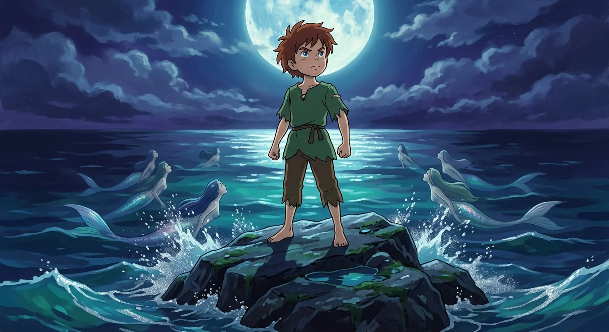
Shadows Stir the Singing Waters
Peter and the children loved playing at the sparkling lagoon. Beautiful mermaids lived there, combing their long hair on the rocks. The mermaids were not very friendly to Wendy and the boys. They would splash their tails and swim away whenever the children came close. But Peter was special, and the mermaids liked talking to him. He even gave Wendy a pretty mermaid comb as a gift.
One quiet afternoon, the children were resting on a big rock when something felt strange. The sunny sky grew dark and cold. Peter woke up fast and whispered, "Pirates! Dive!" Everyone splashed into the water to hide. The pirates had captured Tiger Lily, the brave chief's daughter. Clever Peter used a trick voice to help set her free. Then he had to fight Captain Hook on the slippery rock. Peter got hurt, and Wendy was very tired. A kite string floated down and carried Wendy safely home. Peter waited alone on the rock, feeling scared but also very brave inside.
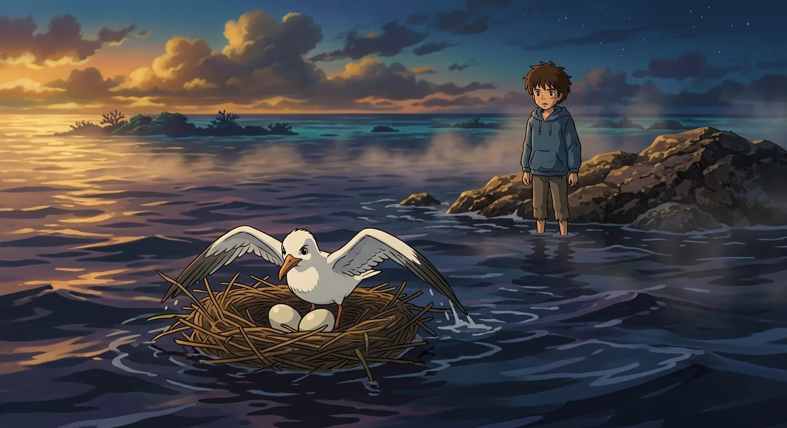
A Desperate Rescue on the Lagoon
Peter was all alone on a rock in the middle of the lagoon. The water kept rising higher and higher around him. Far away, the mermaids were going to sleep in their coral caves under the sea. Each little door made a tiny bell sound as it closed. Peter could hear the soft chimes across the water.
Then Peter saw something floating toward him. At first he thought it was a piece of paper. But it was not paper at all! It was a brave bird called the Never bird. She was paddling her nest across the water like a little boat. She wanted to save Peter! She pushed her nest right up to the rock so Peter could climb in and float to safety. There were two beautiful eggs in the nest. Peter gently put the eggs into a hat floating nearby. The bird was so happy! Peter sailed away in the nest, and the Never bird floated in the hat with her eggs. They both waved goodbye. When Peter got home, Wendy and the boys were so glad to see him.
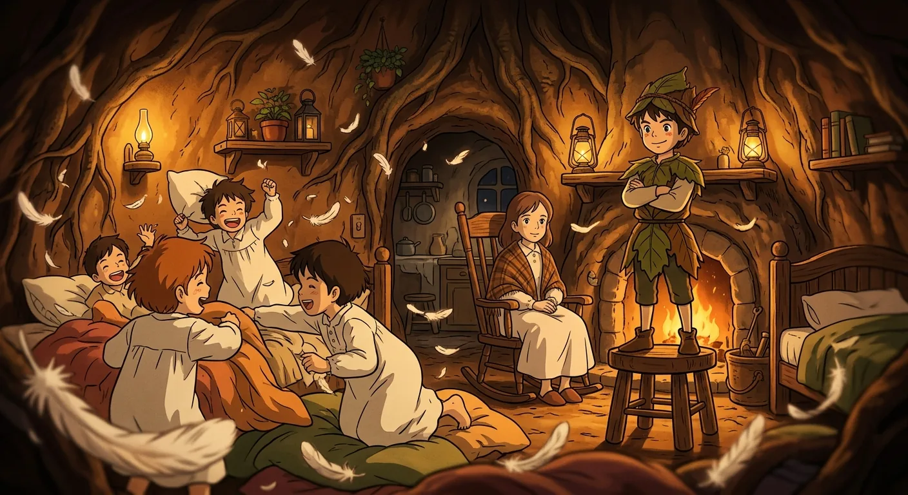
Domestic Bliss Before the Storm
After Peter saved Tiger Lily, her tribe became good friends with the children. They watched over the underground home to keep everyone safe. Peter loved being called the Great White Father. Tiger Lily promised to always help him. Wendy was busy being the pretend mother of the house.
One special evening, all the children sat down for a make-believe tea party. There was so much laughing and chattering and silly arguing over pretend food! Poor Tootles asked if he could have an important job, but the answer was always no. He did not complain though. Peter came back with yummy nuts for everyone. The children begged Peter and Wendy to dance, and they did! Later the children put on their nightgowns and had wonderful pillow fights. They sang songs and told stories and felt so very happy together. None of them knew that a big adventure was about to begin. Finally they climbed into bed, ready for Wendy to tell their favorite story.
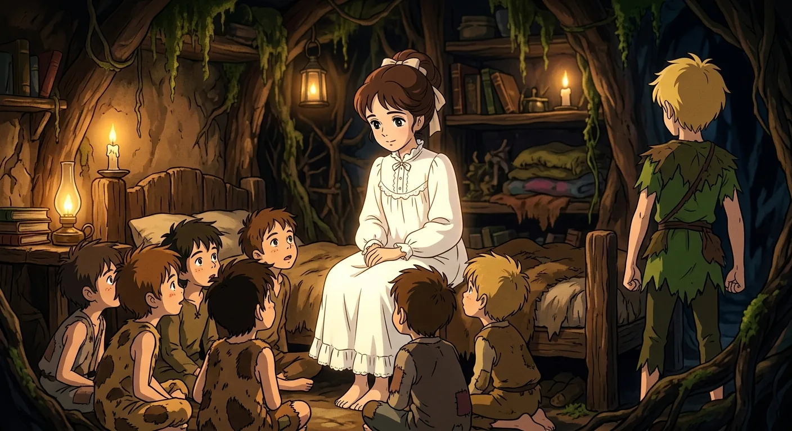
A Mother's Window Left Unbarred
Wendy sat down to tell a story to all the boys. Michael sat at her feet and the lost boys snuggled in bed. She told them about her family back home. She told them about her mother and father and the dog named Nana. The boys kept asking questions and interrupting, but Wendy was patient. Peter told everyone to be quiet so she could finish.
Wendy told them how children could fly away and come back home. She said a mother's window would always stay open. The children liked this happy ending very much. But Peter looked sad. He told them something he had never shared before. He said he once went home after being gone a long time. The window was closed and his mother had a new little boy. Peter felt forgotten and it made his heart hurt.
John and Michael suddenly wanted to go home right away. They missed their mother. The lost boys were invited to come to London too. But Peter said no. He wanted to stay a boy forever. Everyone got ready to leave, feeling a little sad to say goodbye.
Treachery at the Piccaninny Camp
The pirates played a very sneaky trick on everyone. They were supposed to follow the old rules of the island. But Captain Hook did not follow the rules at all. He surprised Tiger Lily and her brave warriors while they were protecting the children's underground home. Tiger Lily and some of her friends got away safely, but it was a very hard night for the tribe.
Hook really wanted to find Peter Pan and Wendy and all the boys. Peter made Hook so angry that the captain could not sleep at night. Down below in their cozy home, the children heard all the noise up above. They wondered who had won the fight. Peter said if their friends won, they would hear the happy sound of a drum. Then Hook found the drum and told Smee to beat it twice. The children thought their friends had won and cheered with joy. But the tricky pirates were waiting quietly above, ready to catch them.
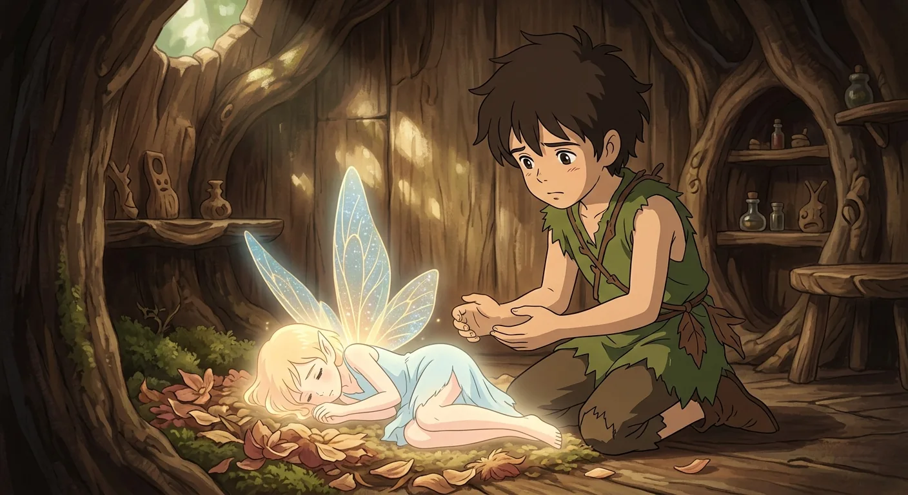
Capture, Secrets, and a Dark Descent
Something scary happened to the lost boys. The pirates caught them and carried them away. Wendy was caught too, but she was so surprised by Captain Hook that she forgot to call for help. The pirates tied up all the boys, but Slightly was hard to tie because he had grown bigger from drinking so much water. Hook noticed that Slightly's tree had a bigger opening now.
Hook found Peter sleeping in his cozy underground home. He put something bad in Peter's medicine cup, hoping to hurt him. Then Hook sneaked away into the dark forest.
Little Tinker Bell came to wake Peter up. She told him the pirates had taken Wendy and the boys. Peter grabbed the medicine cup, but brave Tink drank it first to save him. She got very sick, and her light started to fade. Peter asked all the children everywhere to clap their hands if they believed in fairies. So many children clapped that Tink got better and her light grew bright again. Peter was so happy and so relieved. Now he had to go rescue his friends from the pirate ship.
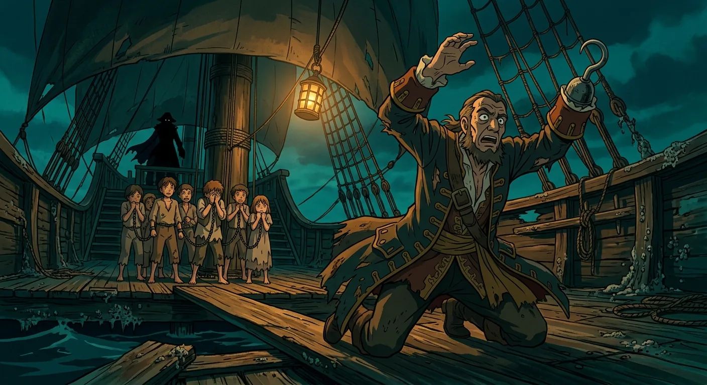
The Lonely Torment of Captain Hook
The pirate ship floated in the dark water at night. It was very quiet except for Smee sewing at his machine. Smee was a funny pirate who did not know how silly he looked. The other pirates played card games on the deck. But Captain Hook walked alone, feeling very sad inside. He should have felt happy because he had captured the boys. But instead he felt terribly lonely and worried about everything. He kept wondering if he was being good enough. His heart felt heavy and mixed up. Then Hook brought the children up from below the ship. He wanted some of them to become pirates. But the boys all said no thank you. They remembered what their mothers would want. John and Michael were especially brave and refused. Wendy stood tall and proud, not scared at all. Then everyone heard a ticking sound coming closer. Hook got very frightened and hid. But when the boys looked over the side of the ship, they saw something wonderful. It was Peter Pan climbing up, perfectly fine and ready to help them!
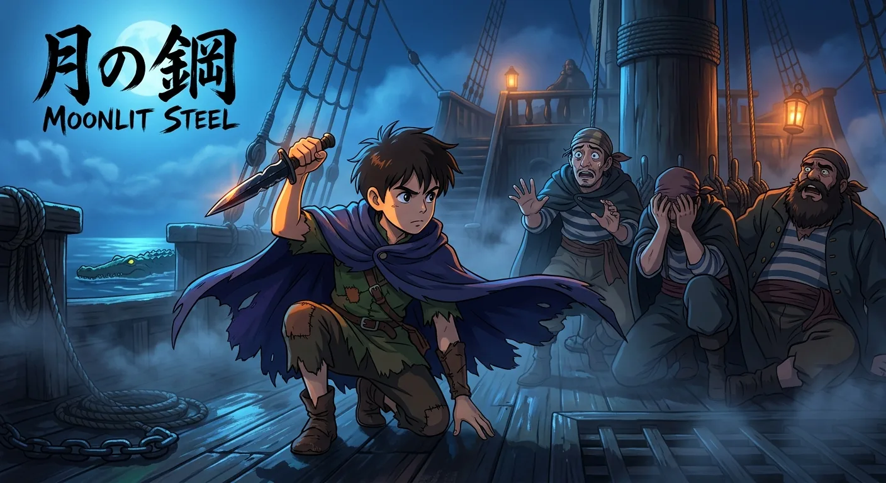
The Crocodile's Tick Becomes Peter's Weapon
Peter was sneaking across the island that night when he noticed something surprising. The crocodile had stopped ticking! The clock inside it had wound down at last. Peter had a clever idea. He started making tick-tock sounds himself! He thought wild animals would think he was the crocodile and leave him alone. It worked wonderfully, and Peter felt very proud of his trick.
Peter swam out to the pirate ship where the children were being held. When the pirates heard the ticking, they got so scared! They thought the crocodile had come aboard. Peter used their fright to help free Wendy and the boys. He found a key and let them all go. Then a great chase happened all around the ship. The pirates were so frightened that most of them ran away. Captain Hook and Peter had one last sword fight, and Peter was very brave. In the end, Hook jumped into the sea and was gone. Wendy tucked all the tired children into cozy beds on the ship. Soon they would sail home together.
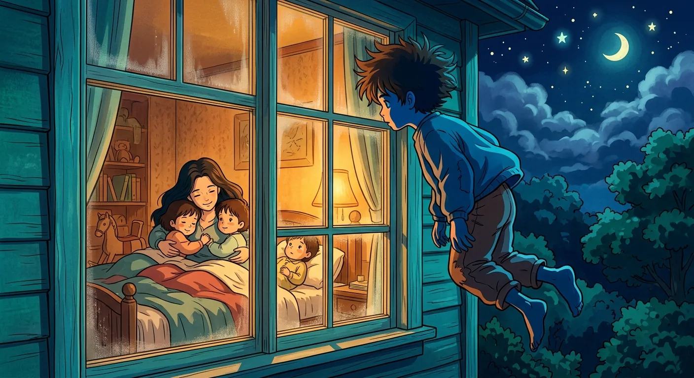
Waiting Hearts and Open Windows
The children were sailing home on the big ship across the sea. Peter was the captain, standing at the wheel and calling out orders. The boys wore sailor clothes and tried to walk like real sailors do. Everyone was excited to be going home at last.
Back at the nursery, the Darling family had been so sad. Father felt very sorry about what happened, and Mother waited by the window every single night. She never closed it, not even once. She missed her children so much that her heart hurt. One night, Peter flew in first with Tinker Bell. He thought about playing a trick, but then he saw how sad Mother looked. He could tell she loved Wendy very, very much. So Peter did something kind instead. He left the window open for them. When Wendy, John, and Michael finally flew home, they found Mother waiting. She wrapped her arms around all three children and held them tight. Outside the window, Peter watched the happy family. He felt a little lonely, but he had done a good thing.
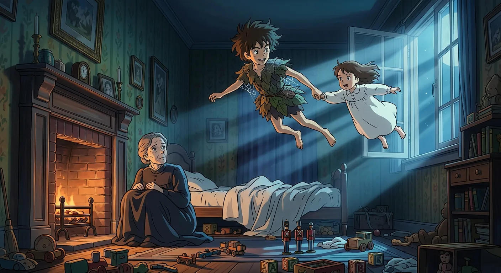
The Promise of Spring Cleaning
The lost boys walked up the stairs to meet the Darling family. They stood in a row and hoped they could stay. Mrs. Darling said yes right away! Mr. Darling felt a little worried about so many new children. But when the boys told him how much they liked him, he felt so happy. He danced through the house with them, looking for places they could all fit.
Peter would not stay. He did not want to go to school or grow up. He wanted to stay a boy forever in his little house in the treetops. Mrs. Darling made a kind promise. Wendy could visit Peter one week every year for spring cleaning. Peter flew away feeling glad again.
The years went by, and the lost boys grew up. They forgot how to fly because they stopped believing. Wendy grew up too and had a daughter named Jane. One spring night, Peter came back to the nursery window. He met Jane, and they flew away together into the starry sky. And so it goes on. Peter always finds a new friend to share his wonderful adventures.
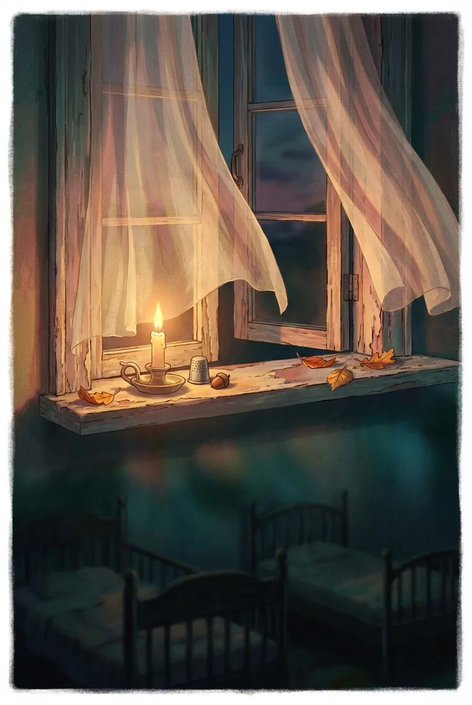